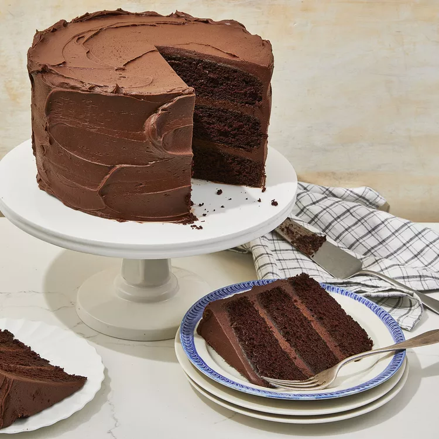

Chocolate Cake

Description
This recipe features an icing made with cream cheese, cocoa, and cinnamon frosts this dark chocolate cake for an elegant dessert.
Ingredients
- 2 cups boiling water
- 1 cup unsweetened cocoa powder
- 2 3/4 cups all-purpose flour
- 2 teaspoons baking soda
- 1/2 teaspoon salt
- 1 cup butter
- 2 1/4 cups white sugar
- 4 eggs
- 1 1/2 teaspoon vanilla extract
Steps
- Preheat oven to 350 degrees F (175 degrees C). Grease 3 - 9 inch round cake pans. In medium bowl, pour boiling water over cocoa, and whisk until smooth. Let mixture cool. Sift together flour, baking soda, baking powder and salt; set aside.
- In a large bowl, cream butter and sugar together until light and fluffy. Beat in eggs one at time, then stir in vanilla. Add the flour mixture alternately with the cocoa mixture. Spread batter evenly between the 3 prepared pans.
- Bake in preheated oven for 25 to 30 minutes. Allow to cool.
Back to the Home Page